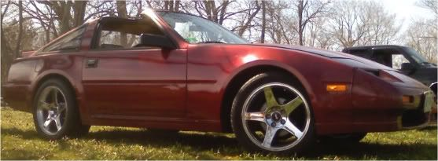

-
i am using romulator with stinky tune, 450cc dsm injectors, and z32 maf. on 12psi stock turbo. car runs like shit when i drive it in the morning…untill it reaches normal operating temp. it bucks and hesitates.
i cant figure out how to change the fuel maps my self with live edit..?
i keep playing around with the injector k value and pulse, but cant find a good combonation.
i dynoed the car the other day i have dyno sheet but no scanner..
it dynoed at 193hp and 247torque. i pulled it until about 4500 because of detonation.....there was still a good amout of power to be made.
how can i get my car to stop detonation.?
i dont under stand im giving the car plenty of fuel (93). although my a/f ratios were quite lean from 2200 to 3400 and then stayed at a nice 12 for the rest of the pull…im not sure why but the person who dynoed it pulled in 4th......
hiow can i fatten up fuel between 2200 and 3400? -
all you have to do is highlight the area you want to change and use the + and - to increase and decrease that part of the map.I could not figure that out until i read the help.cant figure out how to change the fuel maps my self with live edit..?
are you sure it is detonation? i had a problem for a while running 8 lbs with my t3/t4 that i thought was detonation because i don't know what detonation sounds like because i have never heard it before. but it turned out being plug blowout so i regapped my plugs down to .32 and never had a problem since.
but if that is not the problem maybe your base timing got off some how.I hate wheel gap with a extreme passion
my build
viewtopic.php?t=2755
seller feedback
viewtopic.php?f=18&t=10430 -
Yeah I'd suspect your timing is to advanced, if you afr is around 12 then most likely you need to back the timing off.Denis Gagné
aka VGwagon
GM specialized licensed technician
69 510 VG30 powered wagon
73 240z shell VG30et in progress
86 300zx NA2T -
You're car running like shit until it warms up has nothing to do with the base timing and fuel maps. It has everything to do with the cold start scales. Unless of course you changed the values in the base timing and fuel around idle. These cold start scales need to be changed to reflect the size of fuel injectors and MAS.
STOP playing around with the Kvalue and void. Stinky's tune has it set right.
Compare the dyno sheet AFRs to the AFR values in your fuel map vs. RPM. See if they are close. You're TP under WOT and boost is going to be at the very right hand side of the map. Within the last three columns. Your timing should be under 25*BTDC under full load, especially from 3000 and up.
You're car was dynoed in 4th gear because the final gearing is close or equal to 1:1.1984 300ZXT
1986 300ZX 2x2 NA2T
2000 Porsche Boxster
2007 Toyota Yaris -
stinky tune has injector cc of 550bemis wrote:
STOP playing around with the Kvalue and void. Stinky's tune has it set right.
does anyone think the car should be putting out more power than that?
mod list:
3in CM turbo back
gutted plenum
60mm throttle body
romulator
z32 maf
dsm 450cc
efan
intake ect.... -
not if you are only spinning it to 4500does anyone think the car should be putting out more power than that?i pulled it until about 4500 because of detonation
if i were you, i would fix my detonation problem before worrying about power, unless you like melting things. then worry about how much power you can put down after it runs well.
just my .02I hate wheel gap with a extreme passion
my build
viewtopic.php?t=2755
seller feedback
viewtopic.php?f=18&t=10430 -
Did you pull the tune off of Jason's Bin Archive? Because the only Stinky tune I see on there is for 370cc injectors.
. . . and I'm 99% sure that Stinky hasn't used, or published a tune for 550cc fuel injectors for a Z31.
As far as power output. You definately have a bad tune. At 12psi I can make 240WHP on a stock Z31T.1984 300ZXT
1986 300ZX 2x2 NA2T
2000 Porsche Boxster
2007 Toyota Yaris -
does jason have any tune with dsm injectors and a z32 maf?bemis wrote: Did you pull the tune off of Jason's Bin Archive? Because the only Stinky tune I see on there is for 370cc injectors.
. . . and I'm 99% sure that Stinky hasn't used, or published a tune for 550cc fuel injectors for a Z31.
As far as power output. You definately have a bad tune. At 12psi I can make 240WHP on a stock Z31T.
to my understanding i thought a tune with different injectors and maf would not work.
would i have to change anything from jasons tune to make that power?
what tune are you currently using?
oh and i changed the fuel map alittle bit and stopped the detonation....but still feels sluggish.... -
Umm, I can sit here and write a whole book on how to make a base tune, or you can read what has already been published on the web about it. IMO, I would never use someone else's tune as a base tune for my car's, even if it appears that they share the same setup. I would start from the beginning with a known good, the stock tune, and go from there to make changes for the larger fuel injectors and MAS. Then I would immediately drive the car to a dyno and throughly tune it.
Here's a good write-up on how to tune your Z.
http://ztechz.net/id10.html1984 300ZXT
1986 300ZX 2x2 NA2T
2000 Porsche Boxster
2007 Toyota Yaris -
You are intercooled now?
whats your base timing?
what dyno did you use?
I don't suggest running the T25 with an afr of 12:1 or above.Gone - 1988 Shiro
2004 BMW 330Ci
2005 BMW 330i
1991 Twin Turbo Z's (Red and Black)
http://www.E46Turbo330Ci.com

Copyright © 2006–. All rights reserved. Privacy Policy